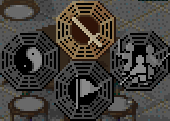

Basic Controls:
Numpad 4 or Left Arrow: Move Up-Left Numpad 6 or Right Arrow: Move Down-Right Numpad 8 or Up Arrow: Move Up-Right Numpad 2 or Down Arrow: Move Down-Left Space/Enter: Talk, Investigate, or Execute Esc/Ins: Cancel or Open System Menu PgUp/PgDn: Flip Pages when Selecting Items
System Menu:
Status: View all party members' attributes, use left/right keys to switch between members, or press Space/Enter to switch to the next member Spell: Use magic Item: Equip or use items System: Access save/load, music, sound effects, or exit game
Battle Controls:

Up: Normal Attack Left: Magic Right: Combo / Combine Attack Down: Other Options (Surround Attack, Item, Defense, Escape, Status)
Battle Options:
F: Auto-cast magic, switches to normal attack if MP is insufficient
A: Surround Attack
D: Defense
E: Use Item
W: Throw Item
Q: Everyone Try to Run
S: View Status
R: Repeat Last Action, switches to normal attack or defense if MP or items are insufficient (if last action was not an attack)
Battle Options Description:
1. Combine Attack:
When there are two or more party members, they can perform a combined magic attack, but it will consume all party members' HP. Please refer to the general tips below.
2. COOP (Surround Attack):
Automatically perform normal attacks on enemies until all enemies are defeated or the user presses Esc/Ins to interrupt.
3. Defend:
Block normal attacks or reduce magic damage, please refer to the description of enemy attacks in the [Attack Damage Formula] section below.
4. Run:
Escape from battle, please refer to the section on Luck in the [Attribute Description] below.
*** General Tips
If the main character of the combine has the following equipment, the combine spell will change accordingly:
Li Xiaoyao: Combine Qi Gong (single target HP-90) Zhao Ling'er: Explosion (single target fire damage HP-100) Lin Yueru: Crescent Slash (single target HP-150) Anu: Heavenly Maiden Scattering Flowers (all enemies HP-109) Queen: Explosive Gu (single target fire damage HP-392)
Since combine attacks consume all party members' HP, and the power of combine spells is not very strong, it also consumes stamina, so it's not very worth using.
Jade Bead: Judgement (single target HP-150) Wind Jewel: Wind God (all enemies wind damage HP-450) Thunder Jewel: Thunder God (all enemies thunder damage HP-460) Water Jewel: Snow Demon (all enemies water damage HP-450 ) Fire Jewel: Fire God (all enemies fire damage HP-452) Earth Jewel: Mountain God (all enemies earth damage HP-455) Nuwa Jewel: Warlord (all enemies HP-666)
1: March Pill
2: RestorPill
3: SoulRevive
4: TrialFruit
5: Sarira
6: Honey
7: MengSoup
8: Flat Peach
9: GourdPill
When a Party Member Dies, the Possible Outcomes:
*** Attribute Description
(1)Combo/ Combine attack=10
(2)Defend=5
(3)Use item or cast spell on allies (including enemy spell attacks)=3
(4)Escape=2
(5)Cast spell on enemies=1
(6)Normal attack=1
Attribute Enhancement Methods:
(1)HP + 10-17
(2)MP + 8-13
(3)STR + 4-5
(4)INT + 4-5
(5)DEF + 2-3
(6)AGI + 2-3
(7)LUK + 2
*** Poison Description
*** Attack Damage Formula
Base Attack Damage:
Attacker's Attack Attribute:
Actual Damage Formula:
1. Our normal attack
Single target attack: Base Attack Damage * (1-1.125) * (1-Defender's Physical Resistance) + (0-1) + 1
Group attack: Base Attack Damage * (1-Defender's Physical Resistance) * Position Coefficient, Position Coefficient = Calculated from right to left, bottom to top, (1/2)^(n-1), n=1-5
(1)Critical Hit: 1/6 chance to deal 3 times the base attack damage (100% chance when Tiangang Battle Qi is active)
(2)Willful Hit: Li Xiaoyao has a 1/12 chance to deal 2 times the base attack damage
(3)The above two can occur simultaneously, meaning Li Xiaoyao has a 1/72 chance to deal 6 times the base attack damage.
2. Our spell attack (including combine attack): (Base Spell Damage + Base Attack Damage/2) * (1-Defender's Resistance) * (1+Battle Enhancement)>
(1)Poison-type spells: Battle Enhancement = 0%
(2)Other spells: Battle Enhancement = 0%, Defender's Resistance = 0%
(3)When the enemy is immune, the minimum damage is 1.
3. Enemy's normal attack: Base Attack Damage * (1-1.125) + (0-1)
(1)It's random whether we will block, successful block = 0 damage (when we choose to defend, the chance to block increases)
(2)When we have defense enhancement (SteelBody or IronSkin), defense is increased by 3 times, damage is reduced
(3)25% chance to automatically defend, damage is reduced (abnormal states such as sleep and weakness will not trigger automatic defense)
(4)Calculate new damage based on the number of damage reductions (see below)
4. Enemy's spell attack: Same formula as our spell attack
(1)When we have no equipment, all elemental resistances and poison resistance are 0%
(2)When we choose to defend, damage is reduced
(3)When we have defense enhancement (SteelBody or IronSkin), damage is reduced
(4)25% chance to automatically defend, damage is reduced (abnormal states such as sleep and weakness will not trigger automatic defense)
(5)Calculate new damage based on the number of damage reductions:a. Once: Original Damage / 2
b. Twice: Original Damage / 3
c. Thrice: Original Damage / 4 - Original Damage / 5
5. Thrown weapon damage = weapon damage + attached spell base damage*(1- defender's resistance)
6. Thrown item damage = item damage + attached spell base damage*(1- defender's resistance)
7. Thrown weapon damage = normal attack damage/2 + attached spell base damage
Conclusion:
1. The highest attack damage is WineGod (when MP is 999), reaching at least 8000 damage, but can only be used 9 times.
2. The second highest attack damage is Throwing DustlSword, reaching at least 2198 damage, up to about 3600 damage, but can only target a single enemy and can only be used once (unless modified).
3. The highest unlimited area attack damage is All in, reaching at least 2000 damage, up to about 2500 damage, but costs 5000 money each time.
4. Other strong spells include Warlord, ThunderGod, WindGod, IceGod, Fire God, Earth God, which depend on the enemy's resistance and battlefield enhancement to determine which spell is stronger.